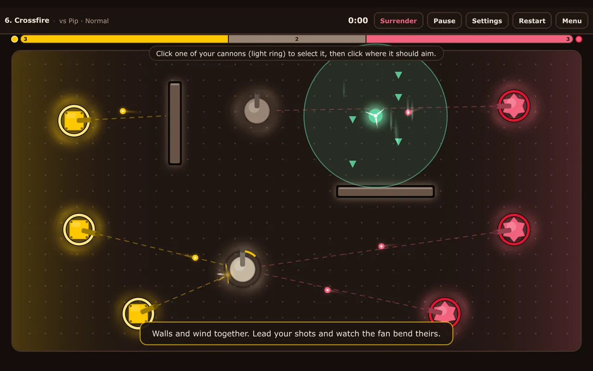
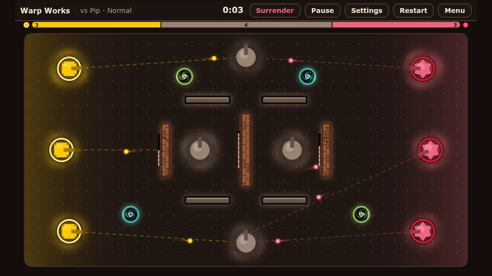
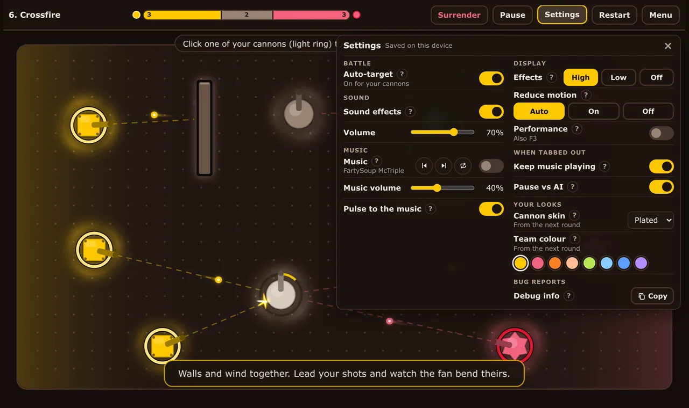
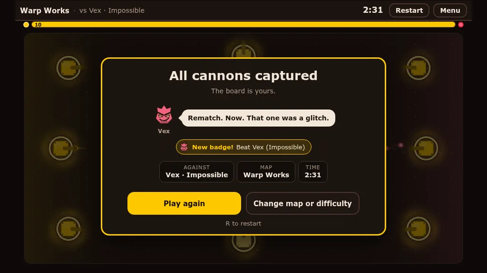

Cannon Capture: producing and testing a browser game
In short: a browser strategy game I worked on as producer and tester. I also steered the game's direction. Gameu, an AI teammate, wrote the code, and I made the design calls and playtested every change.
Web only for now. It can't be launched inside Discord yet.
The game
Cannon Capture is a browser strategy game. It started as a memory of a small, niche Y8 game I loved, where you shoot and capture. That one was way simpler, so I followed my heart on what felt fun, and a few playtesters agreed.
Cannons fire on their own, and you capture the other side's cannons by overpowering them.
- Matches against four AI bots, from Easy to Impossible
- Online player vs player
- Puzzle maps
- Obstacles like portals, breakable walls and one-way glass
It uses the ChocoNeko look, but none of ChocoNeko's characters or story.

My part: producer and tester
Gameu, an AI teammate, wrote the code. My part was the direction, the design calls and the testing:
- Direction and design calls. I set the direction and made the design calls. For example, I decided the sniper's balance, and I turned down walls that move or regenerate because they felt unfair.
- Playtesting. I playtested every change.
- Verifying. Every change was a GitHub issue, and it was only marked “verified” after I retested it myself.

Where it got to
It reached 0.7.5 in two days, with music, visual effects, accessibility settings, win badges and smoother online play.
The habit I'd keep from this: a change only counts as done after I've retested it.

